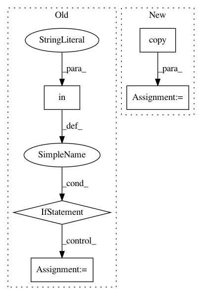

47ba6dedb917847460b098c5f2b776a4c8bd0c1b,torchdiffeq/_impl/adjoint.py,,odeint_adjoint,#Any#Any#Any#,168
Before Change
// Normalise to non-tupled input
shapes, func, y0, t, rtol, atol, method, options, event_fn, decreasing_time = _check_inputs(func, y0, t, rtol, atol, method, options, event_fn, SOLVERS)
if "norm" in options and "norm" not in adjoint_options:
adjoint_shapes = [torch.Size(()), y0.shape, y0.shape] + [torch.Size([sum(param.numel() for param in adjoint_params)])]
adjoint_options["norm"] = _wrap_norm([_rms_norm, options["norm"], options["norm"]], adjoint_shapes)
ans = OdeintAdjointMethod.apply(shapes, func, y0, t, rtol, atol, method, options, event_fn, adjoint_rtol, adjoint_atol,
adjoint_method, adjoint_options, t.requires_grad, *adjoint_params)
if event_fn is None:
After Change
shapes, func, y0, t, rtol, atol, method, options, event_fn, decreasing_time = _check_inputs(func, y0, t, rtol, atol, method, options, event_fn, SOLVERS)
// Avoid in-place modifying a user-specified dict.
adjoint_options = adjoint_options.copy()
// Handle the adjoint norm function.
state_norm = options["norm"]
handle_adjoint_norm_(adjoint_options, shapes, state_norm)
In pattern: SUPERPATTERN
Frequency: 3
Non-data size: 5
Instances
Project Name: rtqichen/torchdiffeq
Commit Name: 47ba6dedb917847460b098c5f2b776a4c8bd0c1b
Time: 2021-01-05
Author: rtqichen@gmail.com
File Name: torchdiffeq/_impl/adjoint.py
Class Name:
Method Name: odeint_adjoint
Project Name: tensorflow/hub
Commit Name: 81092be4e1e900473cd008fec50dc49c8af2eed9
Time: 2019-10-29
Author: no-reply@google.com
File Name: tensorflow_hub/keras_layer.py
Class Name: KerasLayer
Method Name: call
Project Name: Netflix/vmaf
Commit Name: dd113cd2b817d65790781dff7e99f17cf0b865d0
Time: 2019-10-05
Author: zli@netflix.com
File Name: python/src/vmaf/core/quality_runner.py
Class Name: VmafossExecQualityRunner
Method Name: _get_quality_scores